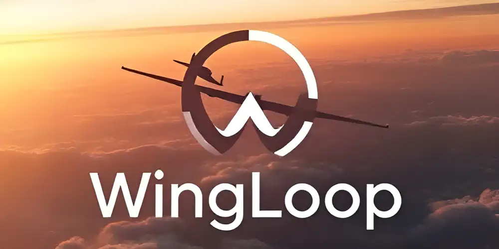
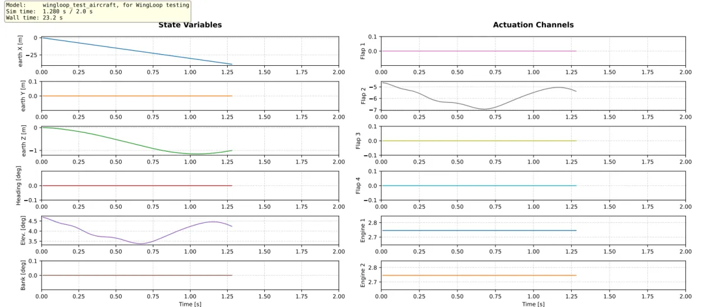
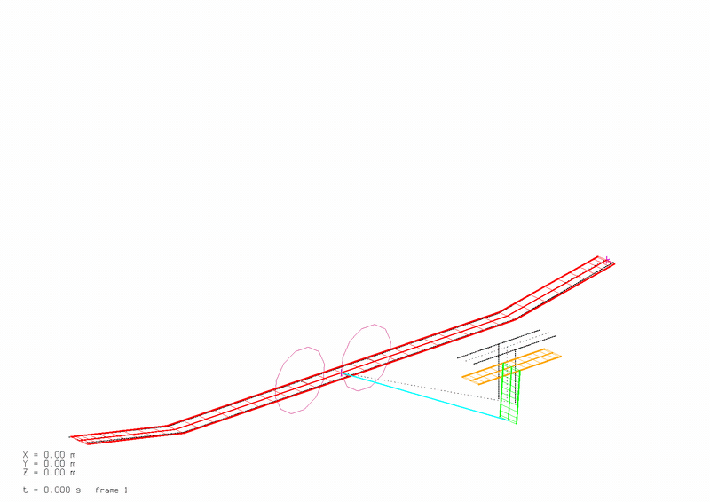
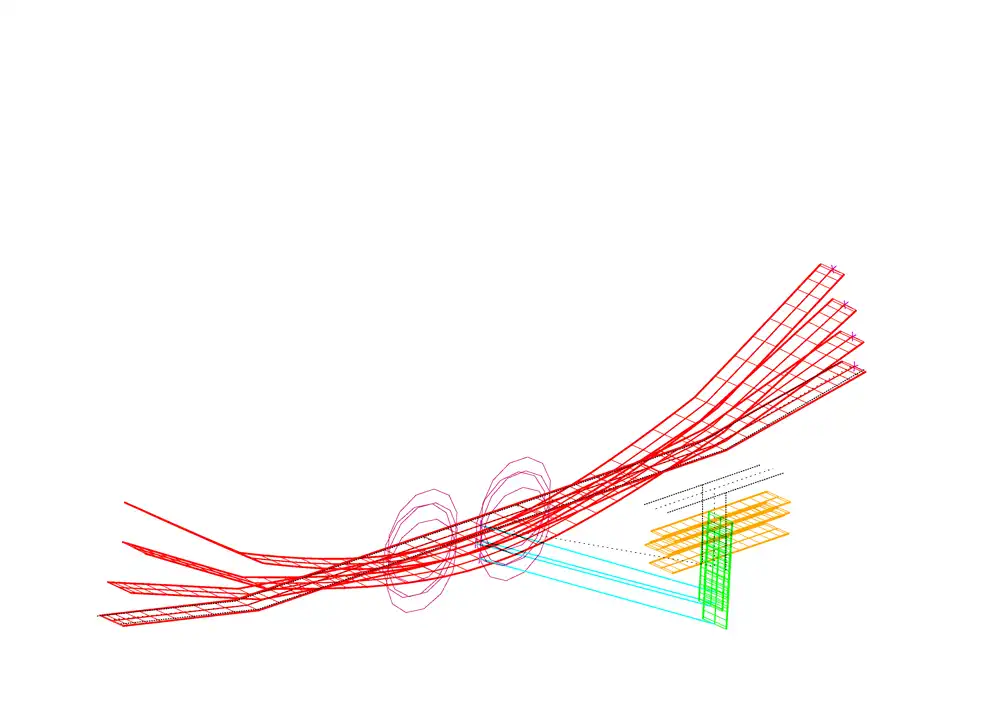

WingLoop
A closed-loop control framework extending ASWING with Python, MATLAB, and Simulink control laws!

The Problem WingLoop Solves
ASWING is a powerful nonlinear aeroelastic tool for flexible aircraft — capable of trim, time-domain transient simulation, and frequency-domain analysis. Its native controller support, however, is limited to linear, bi-scheduled control laws defined entirely within ASWING's own format. For research into flexible aircraft dynamics and control — where control strategies can range from as simple as a fixed-gain law to as complex as needed — this is a significant constraint.
WingLoop lifts that constraint entirely. It integrates ASWING with Python, MATLAB, and Simulink via a time-marching closed-loop interface. At each timestep, the current aircraft state is passed out of ASWING to the chosen controller backend, the control law is evaluated, and the resulting inputs are fed back into ASWING for the next step. The result is a general-purpose simulation framework where the controller implementation is completely decoupled from the simulator — with no changes required to ASWING itself.
Supported Controller Backends
WingLoop supports four controller integration modes:
- Python — native Python control laws; the lightest option, with computational overhead close to ASWING running standalone (~+10% over baseline)
- MATLAB — control laws via MATLAB's Python API; modest additional overhead (~+21%) with a ~3 s one-off engine startup cost
- Simulink — Simulink block diagram controllers run live; flexible but carries significant per-iteration cost
- Simulink FMU — Simulink model compiled once into a standalone binary; after compilation, runtime performance is on par with Python (~+10–12%), making it the recommended option when Simulink is required
Runtime Performance
The table below reports wall-clock benchmarks for a 300-iteration gust-response simulation (PID elevator control, Δt = 10 ms), comparing all backends against the ASWING native baseline. Overhead is the one-off startup cost; computational time is the wall-clock duration of all iterations. Timings were collected on a Dell Precision 3581 (Intel Core i7-13800H, 32 GiB RAM, Ubuntu 22.04).
| Controller | Overhead [s] | Plot ON [s] | Δ ON | Plot OFF [s] | Δ OFF |
|---|---|---|---|---|---|
| ASWING native (baseline) | — | — | — | 10.70 | — |
| Python | 0.49 | 15.01 | +40.3% | 11.73 | +9.6% |
| MATLAB | 2.95 | 15.94 | +49.0% | 12.92 | +20.7% |
| Simulink (with GUI) | 18.58 | 138.0 | +1190% | 137.3 | +1183% |
| Simulink (without GUI) | 13.51 | 105.0 | +881% | 91.06 | +751% |
| Simulink FMU (recompiled) | 26.50 | 14.64 | +36.8% | 11.98 | +12.0% |
| Simulink FMU (non-recompiled) | 0.53 | 14.88 | +39.1% | 11.87 | +10.9% |
Δ columns express the percentage increase in computational time relative to the ASWING native baseline. For simple control laws, Python or MATLAB are the natural choice. When Simulink is required, the compiled FMU path recovers Python-level performance at the cost of a one-time ~26 s compilation step — which can be skipped on subsequent runs if the model has not changed. Note that enabling the live GUI adds wall-clock time across all backends, as plot rendering competes for compute time; this effect is particularly visible in the direct Simulink case.
Graphical Output
WingLoop provides two categories of graphical output. The first is a live GUI displayed during the simulation run, showing time traces of user-defined aircraft state variables and control inputs — useful for monitoring simulation progress and convergence without waiting for the run to finish. The second is a set of post-processing media tools in the WingLoop library for extracting publication-quality visuals from ASWING output data: animated videos of the aircraft flight over time, and stroboscopic views overlaying multiple timesteps into a single image to highlight structural deformation mode shapes and amplitudes. The examples below are all generated from the benchmark gust-response test case.

The WingLoop live GUI — real-time time traces of aircraft states and control inputs displayed throughout the simulation run.

Time-transient animation of a deforming flexible aircraft,
moving camera view

Stroboscopic view of a deforming flexible aircraft,
moving camera view
Reference Publication
WingLoop was presented at the AIAA AVIATION FORUM AND ASCEND 2025:
Leonardo Avoni, Murat Bronz, Jean-Philippe Condomines and Jean-Marc Moschetta. "Enhancing ASWING Flight Dynamics Simulations with Closed-Loop Control for Flexible Aircraft," AIAA 2025-3425. July 2025. https://arc.aiaa.org/doi/10.2514/6.2025-3425
License & Citation
WingLoop is released under CC BY-NC-SA 4.0 — free for non-commercial use with attribution. Commercial use requires a separate agreement; contact details are on the GitHub page. If you use WingLoop in academic work, please cite the AIAA 2025-3425 paper above.